12.2 Radian Measure
One radian is the measure of the central angle in which the sides of the angle intercepts an arc of length equal to length of the radius.
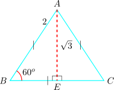
There are \(2\pi \) radian in one complete revolution. Thus \(2\pi \) radians is equivalent to \(360^o\) or \(\pi \, rad = 180^o\).
Therefore we use the following formulas for converting from radians to degrees and vice versal
\[1\, rad = \frac {180}{\pi }\,\text {degrees}\]
\[1\,\text {degree} = \frac {\pi }{180}\, rad\]
\[150^o = 150 \times \frac {\pi }{180}\,rad = \frac {5\pi }{6}\,rad\]
\[\frac {3\pi }{4} = \frac {3\pi }{4}\times \frac {180}{\pi }\,\text {degrees} = 135\,\text {degrees}\]
From here on we shall use \(\pi \) for radians without writing the word: \(\frac {5\pi }{6}\) means \(\frac {5\pi }{6}\) radians. An angle written without a degree sign is a radian measure.
Note 12.12. Radians are not an arbitrary alternative to degrees. The \(360\) of degree measure is a historical choice with nothing mathematical behind it, whereas a radian is defined by the circle itself — the angle subtending an arc equal to the radius — so it needs no unit at all, being a length divided by a length.
Two things follow, and they are the reason radians take over from here. An arc of a circle of radius \(r\) subtending \(\theta \) radians has length exactly \(s=r\theta \), a formula that in degrees carries a clumsy \(\frac {\pi }{180}\). And \(\lim _{x\to 0}\frac {\sin x}{x}=1\) — met in the limits chapter and the reason \(\frac {d}{dx}\sin x=\cos x\) — is true only in radians. In degrees that derivative would acquire a factor of \(\frac {\pi }{180}\), and every formula in the calculus of trigonometric functions would be disfigured by it.
We now apply Pythagoras’ theorem to an equilateral triangle and an isosceles triangle to determine the values of some standard angles.
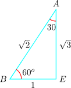
From the figure \(\triangle ABC\) with \(AB = 2\) we have \(BE = 1,\, AE = \sqrt {3}\)
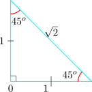
\begin {align*} \sin 60^o & = \frac {\sqrt {3}}{2}\\\\ \cos 60^o & = \frac {1}{2}\\\\ \tan 60^o & = \sqrt {3} \end {align*}
Read these straight off the triangle: with \(AB=2\), \(BE=1\) and \(AE=\sqrt {3}\), the side opposite \(60^{o}\) is \(\sqrt {3}\) and the hypotenuse is \(2\).
\[\text {Also}\quad \sin 30^o = \frac {1}{2}\quad , \quad \cos 30^o = \frac {\sqrt {3}}{2}\quad , \quad \tan 30^o = \frac {1}{\sqrt {3}}\]
From the isosceles triangle \(PQR\) \begin {align*} \sin 45^o & = \frac {1}{\sqrt {2}} = \frac {\sqrt {2}}{2}\\\\ \cos 45^o & = \frac {1}{\sqrt {2}} = \frac {\sqrt {2}}{2}\\\\ \tan 45^o & = 1\\ \end {align*}
Other Standard angles
| \(\sin 0^o = 0\) | \(\sin 90^o = 1\) | ||
| \(\cos 0^o = 1\) | \(\cos 90^o = 0\) | ||
| \(\tan 0^o = 0\) | \(\tan 90^o\) is undefined |
Note also that
| \(\sin 180^o = 0,\) | \(\cos 180^o = -1\) | ||
| \(\sin 270^o = -1\), | \(\cos 270^o = 0\) | ||
| \(\sin 360^o = 0\), | \(\cos 360^o = 1\) |
| \(\theta \) | \(0\) | \(30\) | \(45\) | \(60\) | \(90\) |
| \(\sin \theta \) | \(\sqrt {\frac {0}{4}} = 0\) | \(\sqrt {\frac {1}{4}} = \frac {1}{2}\) | \(\sqrt {\frac {2}{4}} = \frac {\sqrt {2}}{2}\) | \(\sqrt {\frac {3}{4}} = \frac {\sqrt {3}}{2}\) | \(\sqrt {\frac {4}{4}} = 1\) |
| \(\cos \theta \) | \(\sqrt {\frac {4}{4}} = 1\) | \(\sqrt {\frac {3}{4}} = \frac {\sqrt {3}}{2}\) | \(\sqrt {\frac {2}{4}} = \frac {\sqrt {2}}{2}\) | \(\sqrt {\frac {1}{4}} = \frac {1}{2}\) | \(\sqrt {\frac {0}{4}} = 0\) |
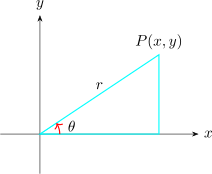
Consider the following diagram
Here the angle \(\theta \) will always refer to the angle which the ray up makes with the positive \(x-\)axis.
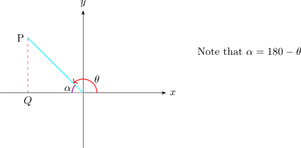
Since we shall be required to determine the trigonometric ratios of angles greater than \(90^o\), we shall use
the term an associated acute angle to determine the ratio of \(\theta \).
Consider the angle \(\, POQ\)

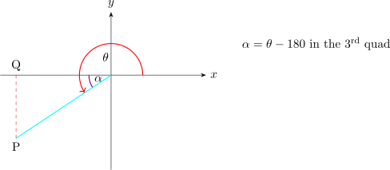
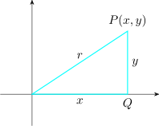
\(1^{\text {st}}\) quad
 | \(r^2\) = \(x^2 + y^2\) | ||||
| \(\sin \theta \) = \(\frac {y}{r}>0\) | |||||
| \(\cos \theta \) = \(\frac {x}{r}>0\) | |||||
| \(\tan \theta \) = \(\frac {y}{x}>0\) |
Second quad
| 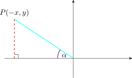 | \(\sin \alpha \) = \(\frac {y}{r}>0\) | ||
| \(\cos \alpha \) = \(-\frac {x}{r}<0\) | |||
| \(\tan \alpha \) = \(-\frac {y}{x}<0\) |
If \(\theta \) is an angle between \(90^0\) and \(180^o\) and \(\alpha \) is the associated acute angle, then
\begin {align*} \sin \theta & = \sin (180 - \theta ) = \sin \alpha \\ \cos \theta & = - \cos ( 180 - \theta ) = -\cos \alpha \\ \tan \theta & = - \tan (180 - \theta ) = -\tan \alpha \\ \end {align*}
If \(\, \theta = 150^o,\,\) then, \begin {align*} \sin 150^o & = \sin (180^o - 150^o) = \sin 30^o\\ \cos 150^o & = -\cos (180^o - 150^o) = -\cos 30^o\\ \tan 150^o & = -\tan (180^o - 150^o) = -\tan 30^o\\ \end {align*}
3\(^{\text {rd}}\) quad
| 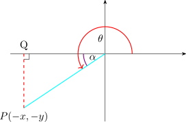 | \(\sin \alpha \) = \(\frac {-y}{r}<0\) | ||||
| \(\cos \alpha \) = \(\frac {-x}{r}<0\) | |||||
| \(\tan \alpha \) = \(\frac {-y}{-x}\) = \(\frac {y}{x}>0\) |
Thus if \(\theta \) is an angle between \(180^o\) and \(270^o\) and \(\alpha \) is the associated acute angle then \begin {align*} \sin \theta & = - \sin (\theta - 180^o) = - \sin \alpha \\ \cos \theta & = - \cos (\theta - 180^o) = - \cos \alpha \\ \tan \theta & = \tan (\theta - 180^o) = \tan \alpha \\ \end {align*}
If \(\, \theta = 240^0,\,\) then \begin {align*} \sin 240^0 & = -\sin (240^0 - 180^o) = - \sin 60^o = \frac {-\sqrt {3}}{2}\\ \cos 240^0 & = -\cos (240^0 - 180^o) = - \cos 60^o = \frac {-1}{2}\\ \tan 240^0 & = \tan (240^0 - 180^o) = \tan 60^o = \sqrt {3}\\ \end {align*}
4\(^{\text {th}}\) quad
 | \(\sin \alpha \) = \(\frac {-y}{r}<0\) | ||||
| \(\cos \alpha \) = \(\frac {x}{r}>0\) | |||||
| \(\tan \alpha \) = \(\frac {-y}{r}\) |
\begin {align*} \sin \theta & = - \sin (360^o - \theta ) = - \sin \alpha \\ \cos \theta & = \cos (360^o - \theta ) = \cos \alpha \\ \tan \theta & = - \tan (360^o - \theta ) = - \tan \alpha \\ \end {align*}
If \(\, \theta = 315^o,\,\) then \begin {align*} \sin 315^o & = -\sin ( 360^o - 315^o) = - \sin 45^o = -\frac {1}{\sqrt {2}}\\\\ \cos 315^o & = \cos ( 360^o - 315^o) = \cos 45^o = \frac {1}{\sqrt {2}}\\\\ \tan 315^o & = -\tan ( 360^o - 315^o) = - \tan 45^o = -1\\ \end {align*}
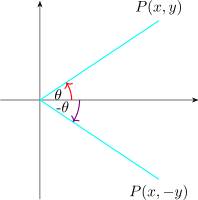
All angles measured in counter clockwise direction will taken to be positive angles whereas all angles measured in clockwise direction are taken to be negative.
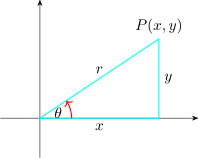
We have that
\(\sin \theta = \frac {y}{r} > 0\),
\(\cos \theta = \frac {x}{r} > 0\)
\(\sin (-\theta ) = \frac {-y}{r}< 0\)
\(\cos (-\theta ) = \frac {x}{r} < 0\)
\(\sin (-\theta ) = \frac {-y}{r} = -\sin \theta \)
\(\cos (-\theta ) = \frac {x}{r} = \cos \theta \)
\begin {align*} \sin (-\theta ) & = - \sin \theta \\ \cos (-\theta ) & = \cos \theta \qquad \text {odd and even functions}\\ \end {align*}
Find without using calculators
\((\text {i})\quad \sin 120^o\qquad (\text {ii})\quad \cos 120^o\qquad (\text {iii})\quad \tan 210^o\)
\((\text {iv})\quad \sin \frac {5\pi }{4}\qquad (\text {v})\quad \cos \frac {11\pi }{6}\qquad (\text {vi})\quad \tan \frac {5\pi }{3}\)
\((\text {vii})\quad \cos (- 120^o)\qquad (\text {viii})\quad \sin (- 120^o)\qquad \)
Solution.
- ii.
- \(\quad \cos 120^o = - \cos (180^o - 120^o ) = - \cos 60^o = \frac {-1}{2}\)
\(\quad \implies \, \cos 120^o = -\frac {1}{2}\)
- iv.
- \(\quad \sin \frac {5\pi }{4} = - \sin \left (\frac {5\pi }{4}-\pi \right ) = - \sin \frac {\pi }{4} = \frac {-1}{\sqrt {2}}\)
\(\quad \implies \, \sin \frac {5\pi }{4} = -\frac {1}{\sqrt {2}}\)
- viii.
- \(\quad \sin (-120^o) = -\sin (120^o) = -\frac {\sqrt {3}}{2}\)
Let \(\quad 0 < x < 2\pi .\,\) Solve
- i.
- \(\quad 2\sin x + \sqrt {3} = 0\)
- ii.
- \(\quad \cos 2x = \sin x\)
Solution.
- i.
- Since the range is given in radians then the solutions must also be given in radians.
\begin {align*} 2\sin x + \sqrt {3} & = 0\\ \implies \quad 2\sin x & = - \sqrt {3}\\ \implies \quad \sin x & = -\frac {\sqrt {3}}{2} \end {align*}
Since sine is negative in the third and fourth quadrants, then we look for values of \(\alpha \) in the third and fourth quadrants.
To find the associated acute angle \(\alpha \) suppress the negative \begin {align*} \sin \alpha & = \frac {\sqrt {3}}{2}\\ \alpha & = 60^o \implies \alpha = \frac {\pi }{3} \end {align*}But we require angle in the third and fourth quadrants
In the third quadrant, \begin {align*} \alpha & = x - \pi \\ \implies \quad x & = \pi + \alpha \\ \implies \quad x & = \pi + \frac {\pi }{3} = \frac {4\pi }{3}\\ \end {align*}
In the fourth quadrant \begin {align*} \alpha & = 2\pi - x\\ \implies \quad x & = 2\pi - \alpha \\ \implies \quad x & = 2\pi - \frac {\pi }{3} = \frac {5\pi }{3}\\ \end {align*}
- ii.
- \begin {align*} \cos 2x & = \sin x\\ \implies \quad \cos ^2x - \sin ^2x & = \sin x\qquad \text {Note}\quad \cos ^2x = 1 - \sin ^2x\\\\ \implies \quad 1 - \sin ^2x - \sin ^2x & = \sin x\\ 2\sin ^2x + \sin x - 1 & = 0\\ 2\sin ^2x + 2\sin x - \sin x - 1 & = 0\\ 2\sin x ( \sin x + 1) - 1(\sin x + 1) & = 0\\ \implies \quad (2\sin x - 1)(\sin x + 1) & = 0 \end {align*}
\(\implies \quad 2\sin x - 1 = 0\quad \) or \(\quad \sin x + 1 = 0\)
\(\implies \quad \sin x = \frac {1}{2}\quad \) or \(\quad \sin x = -1\)
Since \(\quad x = \frac {1}{2}\quad \) implies that \(\alpha \) is in the \(1^{\text {st}}\) and \(2^{\text {nd}}\) quadrants. The associated acute angle is \(\, \alpha = 30^o\,\) or \(\, \alpha = \frac {\pi }{6}\)
In the \(1^{\text {st}}\) quadrant \(\quad x = \alpha = \frac {\pi }{6}\)
In the \(2^{\text {nd}}\) quadrant \begin {align*} x & = \pi - \alpha \\ & = \pi - \frac {\pi }{6} = \frac {5\pi }{6}\\ \end {align*}
\(\sin x = -1 \quad \implies \quad x = \frac {3\pi }{2}\)
\(\cos 2x = \sin x\)
\(\implies \quad x = \frac {\pi }{6}, \quad \frac {5\pi }{6},\quad \frac {3\pi }{2}\)
Let \(\quad 0\leq x \leq 2\pi \,,\,\) solve the equations
- i.
- \(\, \tan x = 2\sin x\)
- ii.
- \(\, -2\sin ^2x + \cos x = -1\)
Solution.
- i.
- \(\, \tan x = 2\sin x\) \begin {align*} \implies \quad \frac {\sin x }{\cos x} & = 2\sin x\quad \text {if}\quad \cos x \neq 0\\ \implies \quad 2\sin x\cos x - \sin x & = 0\\ \sin x ( 2\cos x - 1 ) & = 0 \end {align*}
\(\implies \quad \sin x = 0\quad \) or \(\quad 2\cos x - 1 = 0\)
\(\sin x = 0\quad \) or \(\quad \cos x = \frac {1}{2}\)
Therefore, \(\, \sin x = 0 \quad \implies \, x = 0, \quad \pi , \quad 2\pi \)
\(\cos x = \frac {1}{2}\)
\(\implies \quad x = \frac {\pi }{3}\quad \) in the \(1^{\text {st}}\) quadrant
In the \(4^{\text {th}}\) quadrant
\(x = 2\pi - \frac {\pi }{3} = \frac {5\pi }{3}\)
Therefore, \(\, x = 0, \quad \pi , \quad \frac {\pi }{3}, \quad \frac {5\pi }{3}, \quad 2\pi \)
- ii.
- \(\, -2\sin ^2x + \cos x = -1\) \begin {align*} \implies \quad -2(1 - \cos ^2x ) + \cos x + 1 & = 0\\ -2 + 2\cos ^2x + \cos x + 1 & = 0\\ \implies \quad 2\cos ^2x + \cos x + - 1 & = 0\\ 2\cos ^2x + 2\cos x - \cos x - 1 & = 0\\ 2\cos x (\cos x + 1) - 1(\cos x + 1) & = 0\\ \implies \quad (\cos x + 1)(2\cos x - 1) & = 0 \end {align*}
\(\cos x = -1\quad \) or \(\quad \cos x = \frac {1}{2}\)
If \(\quad \cos x = \frac {1}{2}\quad \implies \quad x = \frac {\pi }{3}, \, \frac {5\pi }{3}\)
If \(\quad \cos x = -1\, \implies \quad x = \pi \)
Therefore, \(\,x = \frac {\pi }{3}, \, \pi ,\quad \frac {5\pi }{3}\)
Questions on this section
Stuck on something here? Ask below and it stays attached to this topic.